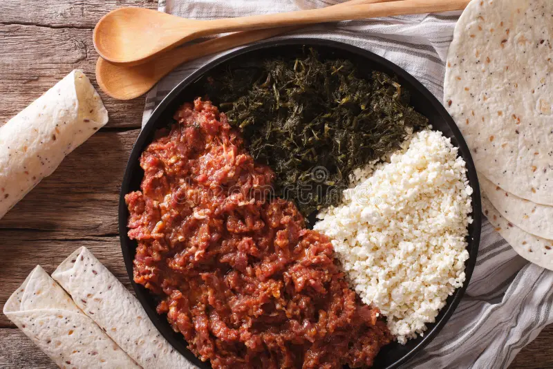

Kitfo Recipe

Description
Kitfo is a traditional Ethiopian dish made from minced raw beef, seasoned with spices and a blend of clarified butter called niter kibbeh. It is often served with injera or kocho and accompanied by various side dishes such as ayib (a type of Ethiopian cottage cheese) and gomen (collard greens).
Ingredients
All you need to make traditional Kitfo is:
- Minced beef (high-quality and fresh)
- Niter kibbeh (Ethiopian spiced clarified butter)
- Mitrin powder (Ethiopian spice blend) or ground cardamom
- Salt
- Ground cayenne pepper or chili powder (optional, for extra heat)
- Injera or kocho (for serving)
- Ayib (Ethiopian cottage cheese) (optional, for serving)
- Gomen (collard greens) (optional, for serving)
Steps
Steps to Make Kitfo:
Prepare the Ingredients:
- Ensure the minced beef is fresh and finely chopped. If not pre-minced, you can mince it yourself using a sharp knife or a meat grinder.
- Melt the niter kibbeh in a small saucepan over low heat.
Mix the Ingredients:
- In a large bowl, combine the minced beef with the melted niter kibbeh.
- Add the mitmita powder (or ground cardamom), salt, and cayenne pepper (if using). Mix thoroughly to ensure the beef is well coated with the spices and butter.
Cook the Kitfo (Optional):
- Kitfo is traditionally served raw, but you can lightly cook it if preferred. To cook, heat a skillet over medium heat and add the seasoned beef mixture.
- Stir the beef mixture constantly for about 1-2 minutes until it is just browned on the outside but still rare inside. Do not overcook.
Serve the Kitfo:
- Transfer the kitfo to a serving dish.
- Serve it with injera or kocho, and optional sides like ayib and gomen.
- Enjoy this delicious Ethiopian delicacy!